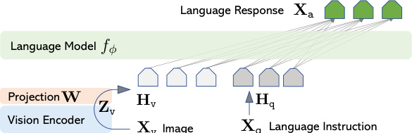

视觉指令微调 — 让模型从"看图描述"
变成"看图办事"。
Why LLaVA matters in the embodied-AI roadmap.
本科生科研任务给了 13 篇论文，覆盖 7 个主题：从 VLM 基座，到 任务规划，再到 端到端 VLA、世界模型、射频与听觉。
LLaVA 是 主题 I（VLM 基座）的开山论文，也是其余主题（OpenVLA / SayCan / Cosmos）默认的视觉接入范式。先读它，等于拿到这条主线的钥匙。
The undergraduate research brief lists 13 papers across 7 topics — from VLM foundations to high-level planning, end-to-end VLA, world models, RF perception, and auditory intelligence.
LLaVA opens topic I and quietly becomes the default visual front-end of nearly every later paper in the list. Reading it first hands us the key to the rest of the roadmap.
为什么需要视觉指令微调？
2023 年的视觉 AI 听不懂"按指令办事"。
方法
GPT-4 生成图文指令数据 — 158K 条 conversation / detail / reasoning。
CLIP + 单层线性投影 + Vicuna — 比 BLIP-2 / Flamingo 简单一个数量级。

Plate Nº I · LLaVA architecture (Liu et al. 2023, Fig. 1)
CLIP ViT-L/14 把图切成 14×14 patch，输出视觉特征 Z_v。
Projection W（一个矩阵）把 Z_v 投影成"伪词向量" H_v，维度对齐 LLM token embedding。
Vicuna LLM 把 H_v 当成几个特殊词，拼到指令文本前，端到端解码答案。
English: a single-layer projection acts like a USB-to-Type-C adapter — fast to iterate, easy to ablate, surprisingly effective.
先教翻译插头认词，再让整个团队配合演练。
Ablation: skip stage 1 → drop 5.11 pts on ScienceQA. Both stages and model size matter.
实验与结果
Strong instruction following, near-GPT-4 reasoning at 1/100 the data.
"At ~1% the data of contemporaries, the simplest possible adapter outperformed elaborate cross-attention designs. Simplicity wins again."
Where LLaVA still falls short.
悄然成为后续所有 VLA 模型的视觉接入层。
Task 2 路线图 — 把读到的东西在仿真里跑起来。
VLM_Grasp_Interactive in mujocoQuestions, doubts, redirections — welcome.
欢迎追问、纠错、改方向。